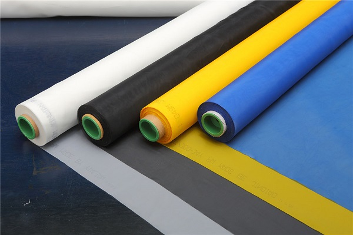
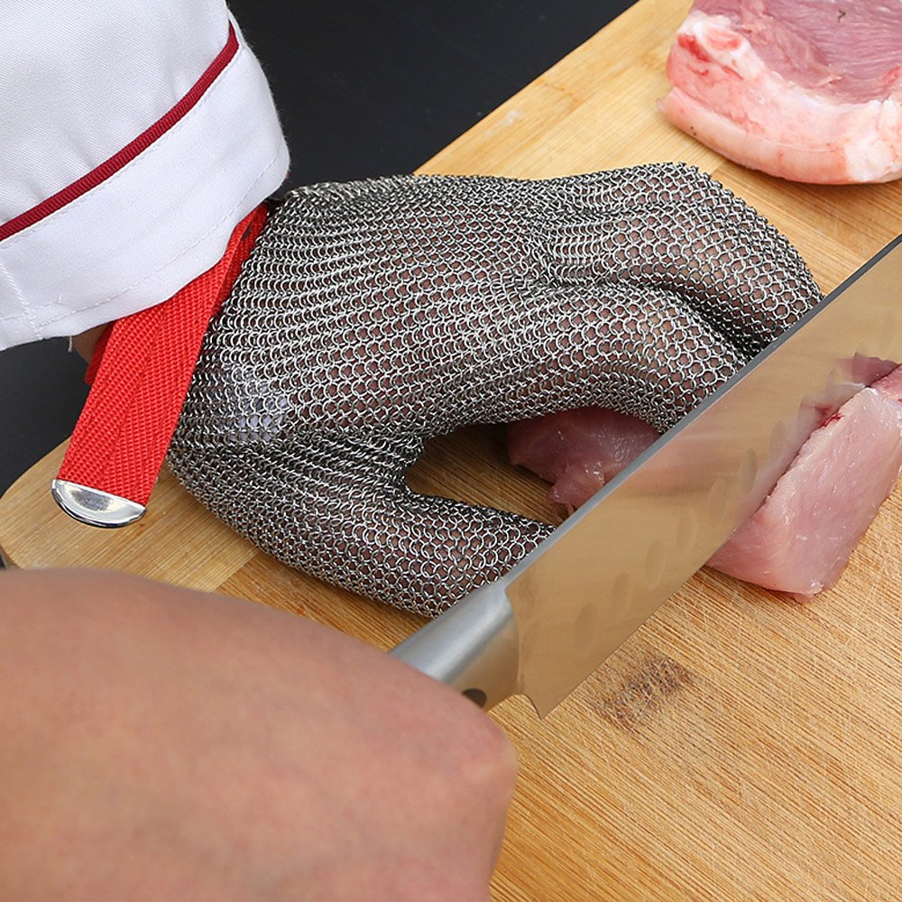
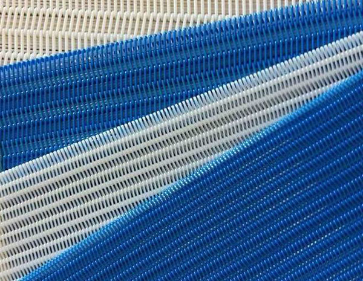
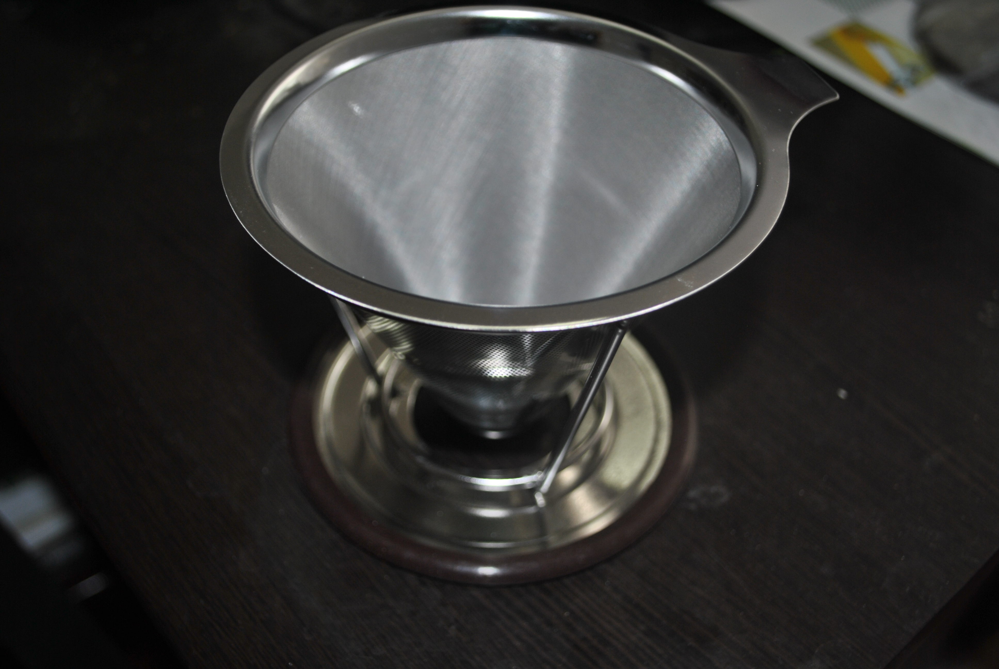

href="css/materialize.min.css" />
Hengshui Qualified Filter Screen Co., Ltd. - printing mesh, polyester
screen meshBeijing, polyester printing mesh, polyester filter belt
-

Polyester Printing Mesh
Screen printing can transfer thick ink deposits and creat special
effects to make it to be optimal process to print high quality
products for textile/CDs/glassceramics...
Learn More
-

Stainless Steel Filter Cloth
Widely used for filtering of liquid, solid particles, powders,
dust in grain, medicine, ceramic, glass, food, scientific
research, mine, coal and other fields.
Learn More
-

Polyester Spiral Press-Filter Fabrics
Polyester Spiral Press-filter Fabrics are mainly used on belt type
filter press,belt vacuum washing machine are add the filler yarn
into the spiral loop, so the air permeability is reduced and less
material loss on the surface of the fabric.
Learn More
-

Stainless Steel Reusable Drip Cone Coffee Filter
In one clever and simple-to-use stand alone drip coffee cone that
gives you the power of a professional barista at home or when you
travel
Learn More